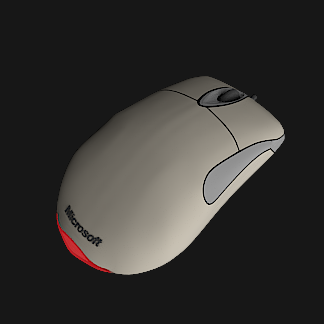

The Microsoft Intellimouse Optical USB mouse is a fairly generic old popular computer mouse. It has a rubber scroll wheel, side buttons, a Microsoft branding decal, and a red LED luminaire on its plastic body.
You may also be interested in a generic mousepad to place this mouse on. Alternatively, you can use a Filco Majestouch 2 Tenkeyless keyboard to place beside the mouse.
Materials
The colours have been calibrated with Macbethcal but the specularity and roughness values are guessed.
The mouse body is an off-white yellowish colour, because it is a very old computer mouse.
The red LED is guessed, but is unlikely to matter as it is not expected to be the target of any lighting simulation.
Usage
This Radiance model follows the Radiance Filesystem Hierarchy
Standard. As
such, please run make lib to build the Radiance mesh file. Once done, you can
use this in your scene by:
!xform lib/mouse-microsoft-intellimouse-optical-usb/obj/mouse-microsoft-intellimouse-optical-usb.rad
Authors
This model was created by Dion Moult.